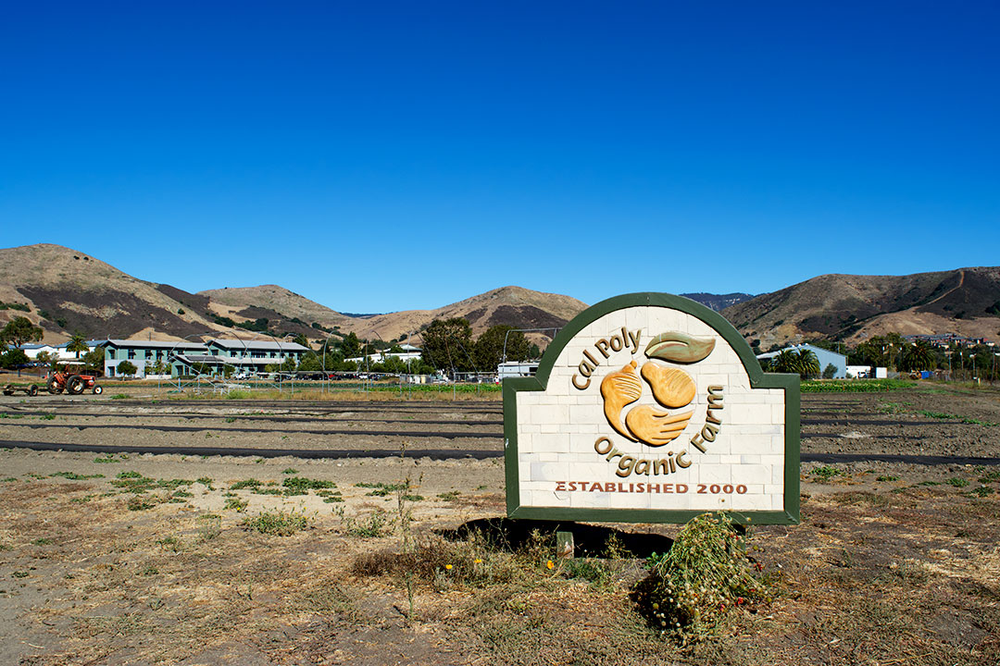
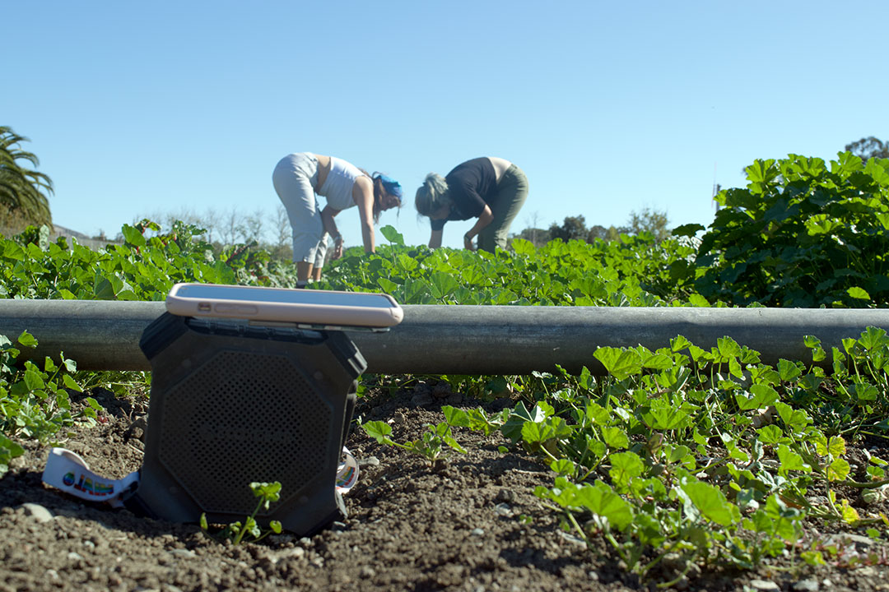
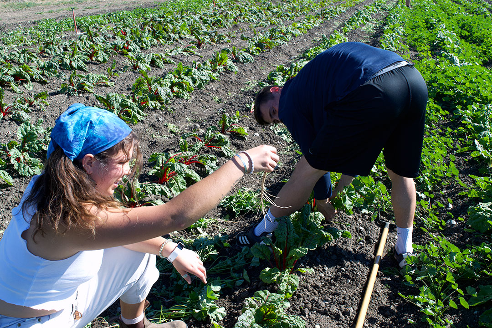
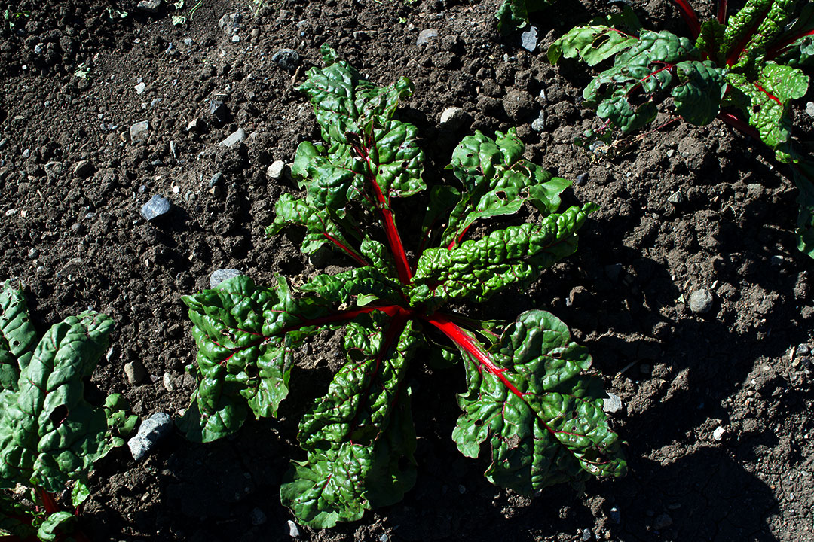
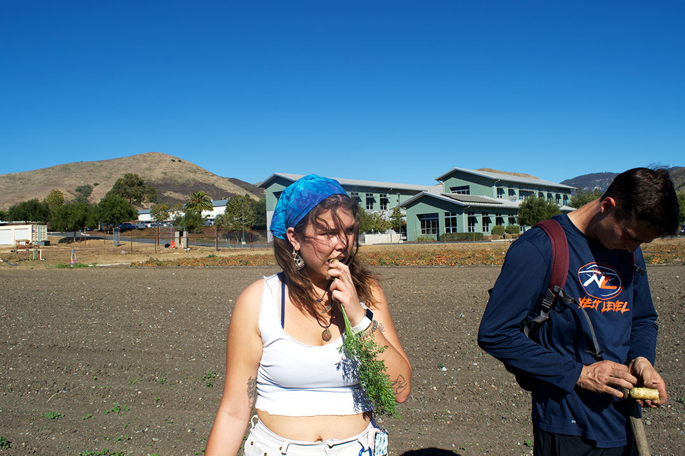
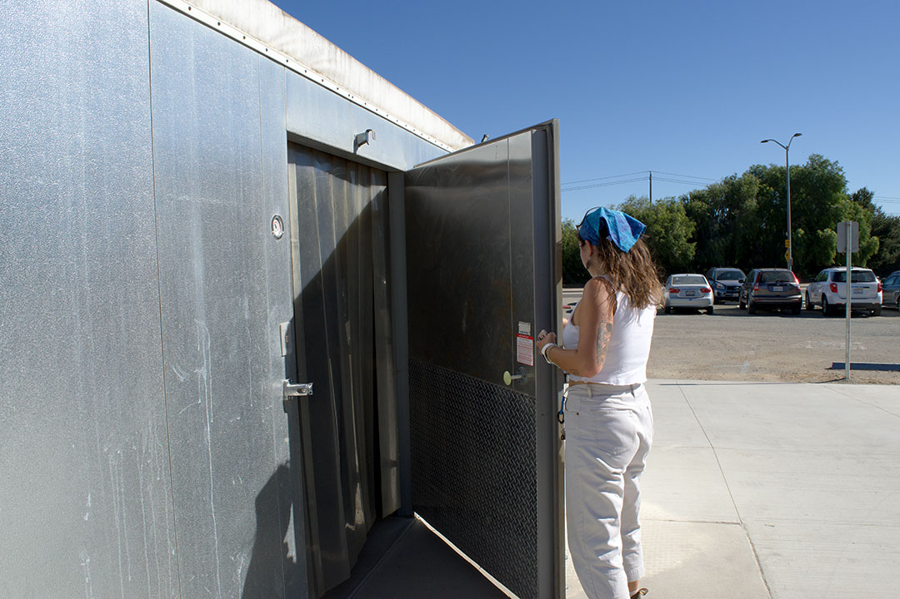
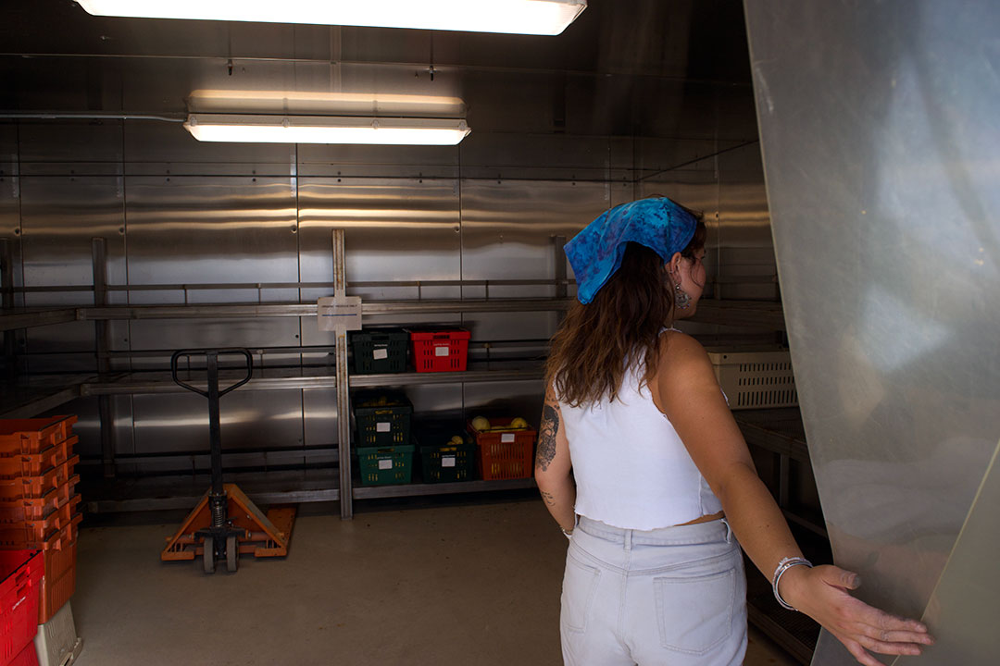
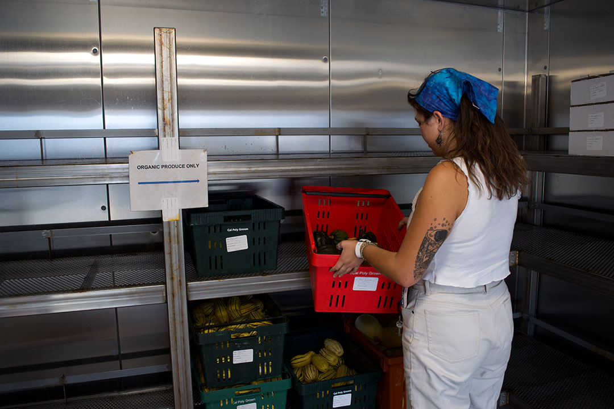
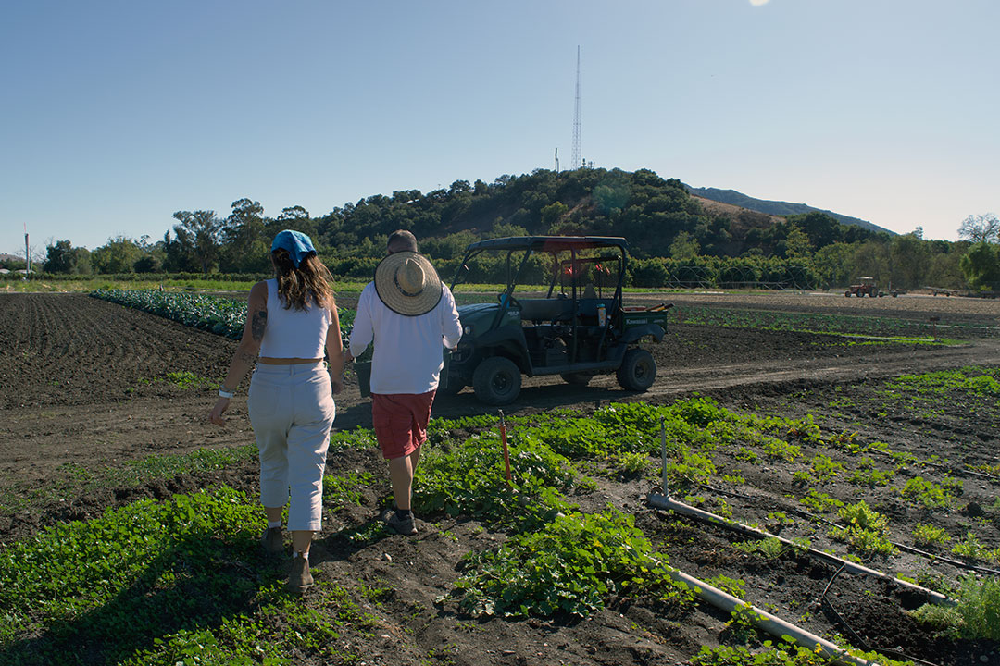
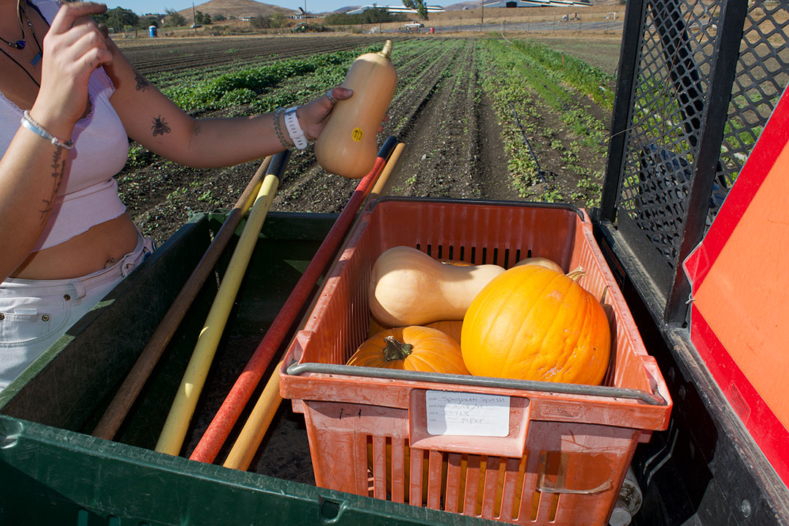

A Shift at Cal Poly's Organic Farm
Organic Farm Photos
1 / 10

SAN LUIS OBISPO || OCTOBER 21st, 2019 || You may have never heard of it, but Cal Poly is home to a nine acre organic farm. It can be located in the Horticulture and Crop Science Department, and is certified organic by the California Certified Organic Farmers. (CCOF)
2 / 10

The unsung hero, Hope’s phone and speaker serenading herself (left) and fellow novice farmer, Cal Poly junior Anthropology and Geology major Abigail Craig. (right) “It’s really fun and special to be able to stick your hands in the dirt and make produce come home with you.” Craig said about why she likes working on the farm.
3 / 10

William (right) and Hope (left) use tools and their bare hands to pull weeds from the farm’s chard supply. “It’s a nice change up from being in a lab or in the classroom, actually being out, getting dirty, hands on.” Gallo said.
4 / 10

One of the farm’s chard sprouts, after harvesting these veggies they will be available to the public at the local farmer’s market.
5 / 10

Cal Poly sophomore Environmental Management and Protection major Hope Springer (left) testing out some of the day’s harvest. While Cal Poly fifth year Nutrition major William Gallo (right) inspects his before eating.
6 / 10

Hope makes a quick trip to the farm refrigerator to take inventory of the current crops.
7 / 10

Crops are brought here the same day of harvesting in order to maintain their freshness.
8 / 10

Only organic produce is permitted inside this area. This prevents commingling; the result of organic produce coming into contact with non-organic produce.
9 / 10

Cal Poly fourth year Agriculture and Environmental Plant Science major Gary Gray (right), carries the day’s squash and pumpkin harvest back to their golf cart, while Hope (left) was given the task of choosing the best of the bunch.
10 / 10

After the cart was loaded up Hope picked out the winning squash, “It has the best shape and feels the best, sorry guys.” Hope said. Apologizing to Abigail and William who had both picked different squash finalists.
❮
❯